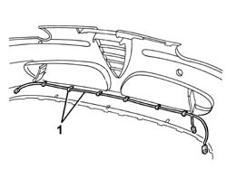
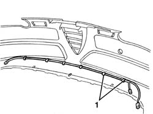

7205E10 Stripping FRONT BUMPER
- Path
- Procedures > 72 PANELS AND FRAME > 7205 STRIPPING FOR REPLACEMENT OPERATIONS > 7205E exterior parts > 7205E10 Stripping FRONT BUMPER
- Kind
- repair procedure (removal / refitting; the operation number is the code)
- Applies to
- all engines; all production periods
- Interactive page
- https://sloeber94.github.io/elrnDB-a147/en/#/3025946
Applies to: all engines; all production periods
 Removing
Removing
 Refitting
Refitting7055A41 RIGHT FRONT GRILLE - R.R. (right and left)
7055B26 cover (one) on bumpers - r+r
7055B32 protective moulding on front bumper (1), lh or rh - r r (right and left)
5550C30 l/h or r/h front turn signal (one) - r+r
1. Disconnect the front direction indicator wiring from the retainers, then remove.

Applies to: all engines; all production periods
Refitting
RemovingCheck that the removed parts are undamaged.
Posiiton the front direction indicator wiring and secure to the retainers.
5550C30 l/h or r/h front turn signal (one) - r+r
7055B32 protective moulding on front bumper (1), lh or rh - r r (right and left)
7055B26 cover (one) on bumpers - r+r
7055A41 RIGHT FRONT GRILLE - R.R. (right and left)
Applies to: all engines; all production periods; only with equipment: GTA
Removing
Refitting7055A41 RIGHT FRONT GRILLE - R.R. (right and left)
7055B26 cover (one) on bumpers - r+r
5550C30 l/h or r/h front turn signal (one) - r+r (right and left)
5050D10 headlamp washer jet/s - r+r with bumpers removed (right and left)
5050D13 headlamp washer system types and fittings - r r (only the section on the bumper)
1. Disconnect the front direction indicator wiring from the retainers, then remove.

Applies to: all engines; all production periods; only with equipment: GTA
Refitting
RemovingCheck that the removed parts are undamaged.
Posiiton the front direction indicator wiring and secure to the retainers.
5050D13 headlamp washer system types and fittings - r r (only the section on the bumper)
5050D10 headlamp washer jet/s - r+r with bumpers removed (right and left)
5550C30 l/h or r/h front turn signal (one) - r+r (right and left)
7055B26 cover (one) on bumpers - r+r
7055A41 RIGHT FRONT GRILLE - R.R. (right and left)
Topics linked from this page (7)
- 5050D10 headlamp washer jet/s - r+r with bumpers removed
- 5050D13 headlamp washer system types and fittings - r r
- 5550C30 l/h or r/h front turn signal (one) - r+r
- 7055A40 radiator shield - r r
- 7055A41 RIGHT FRONT GRILLE - R.R.
- 7055B26 cover (one) on bumpers - r+r
- 7055B32 protective moulding on front bumper (1), lh or rh - r r